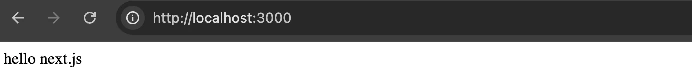
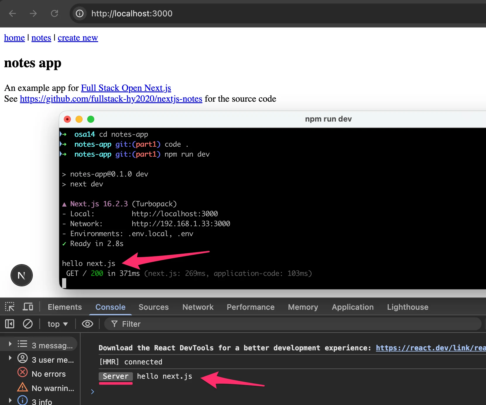
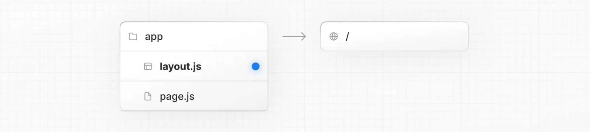
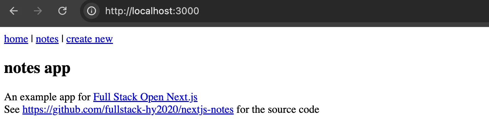
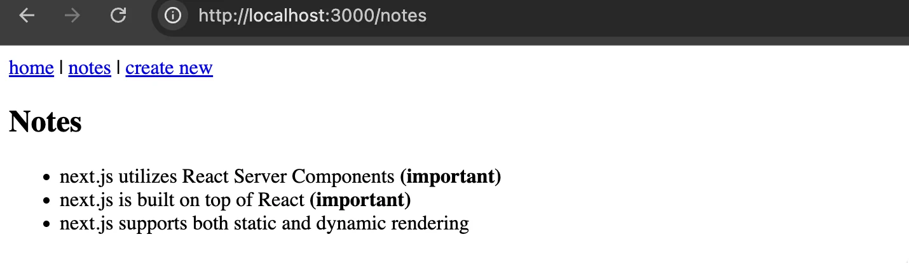
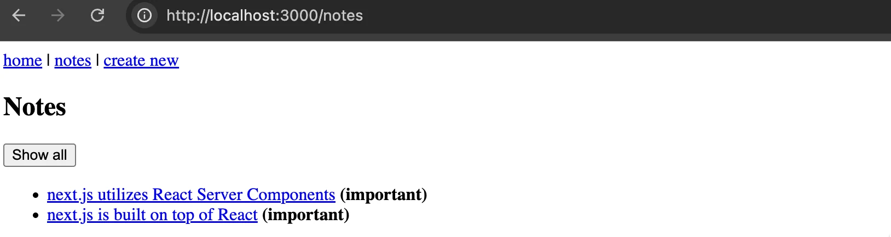
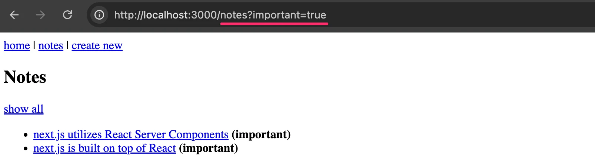

من تطبيقات الصفحة الواحدة إلى العرض من الخادم
ملاحظات Next.js
أفضل طريقة لاستيعاب Next.js هي أن نبدأ العمل عملياً. ومرة أخرى، تطبيق الملاحظات هو ما سنبنيه.
يُنشأ تطبيق Next.js باستخدام أداة create-next-app . لنُنشئ الآن تطبيقنا بتشغيل
npx create-next-app@latest notes-app
? Would you like to use the recommended Next.js defaults?
❯ Yes, use recommended defaults
قرّرنا المضي بالإعدادات الافتراضية الموصى بها.
يبدو هيكل مجلد التطبيق كما يلي:
├── AGENTS.md
├── app
│ ├── favicon.ico
│ ├── globals.css
│ ├── layout.tsx
│ └── page.tsx
├── CLAUDE.md
├── eslint.config.mjs
├── next-env.d.ts
├── next.config.ts
├── node_modules
├── package-lock.json
├── package.json
├── postcss.config.mjs
├── public
├── README.md
└── tsconfig.json
ينبغي أن تبدو أشياء كثيرة هنا مألوفة. يمكننا تخمين أن next.config.ts يحتوي على إعدادات Next.js. ومن المثير للاهتمام أن الملفين AGENTS.md و CLAUDE.md يُنشآن أيضاً لوكلاء البرمجة. ويوجّه AGENTS.md تحذيراً إلى الوكلاء الذين قد يعتمدون على بيانات تعلّم أقدم:
<!-- BEGIN:nextjs-agent-rules -->
<em># This is NOT the Next.js you know</em>
This version has breaking changes — APIs, conventions, and file structure may all differ from your training data. Read the relevant guide in `node_modules/next/dist/docs/` before writing any code. Heed deprecation notices.
<!-- END:nextjs-agent-rules -->
أهم مجلد هو app الذي سيحتوي على معظم شيفرة التطبيق.
لننتقل إلى الشيفرة. سنبدأ ببعض التنظيفات. أولاً غيّر محتوى الملف layout.tsx إلى ما يلي:
export default function RootLayout({
children,
}: {
children: React.ReactNode
}) {
return (
<html lang="en">
<body>{children}</body>
</html>
)
}
بعد ذلك، نغيّر محتوى page.tsx ليصبح كما يلي:
const Home = () => {
return <div>hello next.js</div>
}
export default Home
الآن يمكننا تشغيل التطبيق
npm run dev
وأصبح لدينا تطبيق Next.js بسيط يعمل:

سنجعل هذه الصفحة الرئيسية لتطبيقنا، لذا لنضع عليها مزيداً من المحتوى.
const Home = () => {
return (
<div>
<div>
<h2>notes app</h2>
An example app for{" "}
<a href="https://courses.mooc.fi/org/uh-cs/courses/full-stack-open-nextjs">
Full Stack Open Next.js
</a>
</div>
<div>
See{" "}
<a href="https://github.com/fullstack-hy2020/nextjs-notes">
https://github.com/fullstack-hy2020/nextjs-notes
</a>{" "}
for the source code
</div>
</div>
)
}
export default Home
تبدو الصفحة الرئيسية لتطبيقنا كمكوّن React عادي. لكنها ليست كذلك. في Next.js، تكون المكوّنات داخل مجلد app من نوع React Server Components افتراضياً. وخلافاً لمكوّنات React التقليدية التي كنا نكتبها حتى الآن، تُعرض مكوّنات الخادم (Server Components) على الخادم وليس في المتصفح.
لنتحقق من ذلك باستخدام console.log القديم المعروف:
const Home = () => {
console.log('hello next.js')
return (
<em>// ...</em>
)
}
export default Home
عندما ننتقل إلى http://localhost:3000، يظهر ناتج console.log في الطرفية التي يعمل فيها الخادم:

ومن المثير للاهتمام أن الناتج يظهر أيضاً في وحدة تحكم المتصفح أثناء وضع التطوير. هذه ميزة تطويرية في Next.js تساعد في تصحيح الأخطاء: يمرّر الخادم ناتج وحدة التحكم إلى أدوات مطوّري المتصفح (DevTools) لتراه في مكان واحد. لكن هذا لا يعني أن المكوّن نُفّذ في المتصفح. فالمكوّن نُفّذ على الخادم، واكتفى Next.js بعكس ناتج وحدة التحكم إلى العميل للراحة. أما في الإنتاج، فيبقى ناتج وحدة التحكم من جهة الخادم على الخادم فقط.
موجّه التطبيق (App router)
نريد عرض قائمة الملاحظات على الرابط http://localhost:3000/notes. في React كان هذا سيتم باستخدام React Router.
في Next.js الأمور أبسط بفضل موجّه التطبيق (App router) الذي يطبّق توجيهاً قائماً على نظام الملفات حيث تحدد المجلدات والملفات داخل مجلد app بنية التوجيه في التطبيق.
كان لدينا بالفعل الملف app/page.tsx ، وهو الملف page.tsx الموجود مباشرة تحت مجلد app . يعرّف هذا الملف مكوّن خادم React الذي يحدد محتوى المسار /. لنستعر صورة من وثائق Next.js تصوّر هذه العلاقة:
تطرقنا سابقاً وبإيجاز إلى الملف app/layout.tsx :
export default function RootLayout({
children,
}: {
children: React.ReactNode
}) {
return (
<html lang="en">
<body>{children}</body>
</html>
)
}
ما دور هذا الملف؟ التخطيط هو غلاف واجهة مشترك يُعرض حول كل صفحة ضمن نطاقه. في هذه الحالة، يغلّف التخطيط الجذري التطبيق بأكمله ويوفّر وسمي <html> و <body> . وتستقبل خاصية children محتوى الصفحة الحالية (أي المكوّن المصدَّر من page.tsx ). تبقى التخطيطات ثابتة عبر التنقلات ولا يُعاد عرضها، ما يجعلها مثالية للعناصر المشتركة مثل أشرطة التنقل والتذييلات.
يوضّح ما يلي العلاقة بين التخطيط والمسار المعروض:

إذاً من الواضح أن التخطيط الجذري هو المكان المناسب لتنفيذ شريط تنقل لتطبيقنا. لنفعل ذلك الآن:
import Link from "next/link"
export default function RootLayout({
children,
}: {
children: React.ReactNode
}) {
return (
<html lang="en">
<body>
<nav>
<Link href="/">home</Link>
{" | "}
<Link href="/notes">notes</Link>
{" | "}
<Link href="/notes/new">create new</Link>
</nav>
{children}
</body>
</html>
)
}
يستخدم شريط التنقل المكوّن Link للروابط. وسلوك المكوّن واضح تماماً: فهو يوفّر توجيهاً من جهة العميل تماماً كما يفعل نظيره في React Router.
الآن يبدو التطبيق كما يلي

من الواضح أن الروابط لا تعمل في هذه المرحلة.
صفحة الملاحظات
بعد ذلك سننشئ العرض /notes الذي يعرض مجموعة الملاحظات. ووفقاً لاصطلاح موجّه تطبيق Next.js، سننشئ المجلد app/notes وداخله الملف page.tsx بالمحتوى التالي:
const notes = [
{ id: 1, content: "next.js utilizes React Server Components", important: true },
{ id: 2, content: "next.js is built on top of React", important: true },
{
id: 3,
content: "next.js supports both static and dynamic rendering",
important: false,
},
]
const Notes = () => {
return (
<div>
<h2>Notes</h2>
<ul>
{notes.map(note => (
<li key={note.id}>
{note.content} {note.important && <strong>(important)</strong>}
</li>
))}
</ul>
</div>
)
}
export default Notes
لا شيء مفاجئ في المكوّن. يمكننا الآن الانتقال إلى العرض الجديد:

سنحفظ الملاحظات في النهاية في قاعدة بيانات. وللتحضير لهذا الانتقال، لنعيد تنظيمها في الملف app/services/notes.ts :
const notes = [
{ id: 1, content: "next.js utilizes React Server Components", important: true },
{ id: 2, content: "next.js is built on top of React", important: true },
{
id: 3,
content: "next.js supports both static and dynamic rendering",
important: false,
},
]
let nextId = 4
export const getNotes = () => {
return notes
}
export const addNote = (content: string, important: boolean) => {
notes.push({ id: nextId++, content, important })
}
يصدّر الملف الآن الدالة getNotes بسلوك واضح.
وللاستعداد للميزة التالية، أضفنا أيضاً الدالة addNote إلى الملف.
في أجزاء سابقة من Full Stack Open، فصلنا استدعاءات الواجهة الخلفية إلى مجلد services. وهنا نتبع المبدأ نفسه: يضم مجلد app/services وحدات مسؤولة عن الوصول إلى البيانات. وفي الوقت الحالي تعيد getNotes ببساطة مصفوفة مكتوبة مباشرة في الشيفرة، لكن يمكننا لاحقاً استبدالها باستعلام قاعدة بيانات دون المساس بمكوّن الصفحة إطلاقاً.
أصبح app/notes/page.tsx الآن كما يلي:
import { getNotes } from "../services/notes" // HIGHLIGHT LINE
const Notes = () => {
const notes = getNotes() // HIGHLIGHT LINE
return (
<div>
<h2>Notes</h2>
<ul>
{notes.map(note => (
<li key={note.id}>
{note.content} {note.important && <strong>(important)</strong>}
</li>
))}
</ul>
</div>
)
}
export default Notes
يجدر بنا التوقف للتفكير فيما يحدث هنا. جميع مكوّناتنا حتى الآن، الصفحة الرئيسية والتخطيط وصفحة الملاحظات، هي مكوّنات خادم React. وتُعرض بالكامل على الخادم. ويتلقى المتصفح HTML جاهزاً، ولا تُرسل أي شيفرة JavaScript خاصة بهذه المكوّنات إلى العميل إطلاقاً.
إنشاء ملاحظات جديدة
الشيء التالي الذي سننفذه هو بالطبع إنشاء ملاحظات جديدة. لدينا بالفعل مسار /notes/new مهيأ، لذا لننشئ المكوّن /notes/new/page.tsx بالمحتوى التالي:
const NewNote = () => {
return (
<div>
<h2>Create a new note</h2>
<form>
<div>
<label>
Content
<input type="text" name="content" required />
</label>
</div>
<div>
<label>
<input type="checkbox" name="important" />
Important
</label>
</div>
<button type="submit">Create</button>
</form>
</div>
)
}
export default NewNote
يبدو النموذج جيداً لكنه لا يفعل شيئاً. فكيف ننفّذ إرسال النموذج؟
في الأجزاء السابقة من Full Stack Open، كنا سنضيف معالج حدث onSubmit ونستخدم useState لإدارة حقول النموذج. ويتطلب هذا الأسلوب مكوّن عميل، لأن معالجات الأحداث والخطافات تعمل في المتصفح فقط.
غير أن Next.js يقدّم خياراً آخر: Server Actions . و Server Action هي دالة تعمل على الخادم ولكن يمكن استدعاؤها مباشرة من نموذج في المتصفح.
لننشئ الآن المجلد /app/actions لإجراءات الخادم، والملف /app/actions/notes.ts للإجراءات. ومحتوى الملف كما يلي:
"use server"
import { redirect } from "next/navigation"
import { addNote } from "../services/notes"
export const createNote = async (formData: FormData) => {
const content = formData.get("content") as string
const important = formData.get("important") === "on"
addNote(content, important)
redirect("/notes")
}
يأخذ الإجراء createNote المعامل formData ، ويستخدم الدالة get للوصول إلى قيم النموذج. ثم يستخدم الدالة addNote المعرّفة في app/services/notes.ts لحفظ الملاحظة المنشأة في قائمة الملاحظات. وأخيراً، يستدعي redirect لإعادة المستخدم إلى قائمة الملاحظات.
التوجيه "use server" في أعلى الملف يضع علامة على جميع الدوال المصدَّرة باعتبارها Server Actions.
ويُمرَّر إجراء الخادم كخاصية action إلى <form>:
import { createNote } from "./actions" // HIGHLIGHT LINE
const NewNote = () => {
return (
<div>
<h2>Create a new note</h2>
<form action={createNote}> // HIGHLIGHT LINE
<div>
<label>
Content
<input type="text" name="content" required />
</label>
</div>
<div>
<label>
<input type="checkbox" name="important" />
Important
</label>
</div>
<button type="submit">Create</button>
</form>
</div>
)
}
export default NewNote
عند إرسال النموذج، يرسل المتصفح بيانات النموذج إلى الخادم كطلب POST، ثم يُنفَّذ إجراء الخادم وتُحدَّث الصفحة. كل ذلك دون كتابة أي شيفرة JavaScript من جهة العميل. وهذا يعني أن مكوّن النموذج يمكن أن يبقى مكوّن خادم.
لكن كيف يعمل هذا فعلاً؟ عندما يصرّف Next.js التطبيق، يكتشف كل دالة موسومة بـ "use server" ويولّد نقطة نهاية HTTP فريدة لكل واحدة منها. ولا تضمّن خاصية action={createNote} دالة الخادم في حزمة العميل. بل يستبدل Next.js مرجع الدالة بمعرّف مخفي يشير إلى تلك النقطة. وعندما يرسل المستخدم النموذج، يجري المتصفح طلب POST قياسياً إلى النقطة المولّدة، ويرسل معه بيانات النموذج.
على جانب الخادم، يتلقى Next.js الطلب، ويبحث عن إجراء الخادم الصحيح عبر معرّفه، ويستدعيه مع كائن FormData. وبمجرد اكتمال الإجراء، وبعد استدعائه redirect في حالتنا، يرسل الخادم استجابة تخبر العميل بالانتقال إلى الرابط الجديد. ولا يحتاج المتصفح أبداً إلى معرفة أي شيء عن addNote أو مصفوفة الملاحظات، لأن كل هذا المنطق يبقى بالكامل على الخادم.
لنلقِ نظرة أخرى على نهاية إجراء الخادم:
export const createNote = async (formData: FormData) => {
const content = formData.get("content") as string
const important = formData.get("important") === "on"
addNote(content, important)
redirect("/notes") // HIGHLIGHT LINE
}
إذاً يُستدعى الأمر redirect لإعادة المستخدم إلى العرض notes الذي يسرد الملاحظات. وكانت التطبيقات التقليدية المعروضة من جهة الخادم تلجأ في هذه الحالة إلى نمط post-redirect-get .
مع تطبيق Next.js، يختلف الأسلوب قليلاً. فبدلاً من أن ينفّذ المتصفح إعادة توجيه كاملة للصفحة وطلب GET، يستجيب الخادم بتعليمات داخلية تخبر موجّه Next.js من جهة العميل بالانتقال إلى /notes . ثم يجلب الموجّه محتوى الصفحة الجديدة فقط (حمولة مكوّن خادم React الخاص بصفحة الملاحظات) ويحدّث العرض دون إعادة تحميل كاملة للصفحة. لذا ما زلنا نحصل على دلالة «إعادة التوجيه بعد POST»، لكن الانتقال أسرع وأسلسب لأن Next.js يتعامل معه في الخفاء كتنقل من جهة العميل.
العرض الثابت
يبدو أن تطبيقنا يعمل بشكل جيد أثناء التطوير. لكن إذا بنينا التطبيق للإنتاج وشغّلناه، سنلاحظ مشكلة.
لنبنِ التطبيق ونشغّله في وضع الإنتاج:
npm run build
npm start
يُظهر ناتج البناء شيئاً مثيراً للاهتمام:
npm run ▲ Next.js 16.2.3 (Turbopack)
Creating an optimized production build ...
✓ Compiled successfully in 2.2s
✓ Finished TypeScript in 4.8s
✓ Collecting page data using 7 workers in 451ms
✓ Generating static pages using 7 workers (6/6) in 263ms
✓ Finalizing page optimization in 19ms
Route (app)
┌ ○ /
├ ○ /_not-found
├ ○ /notes
└ ○ /notes/new
لاحظ رمز ○ بجانب كل مسار. هذا يعني أن جميع صفحاتنا ثابتة، إذ عُرضت مسبقاً وقت البناء إلى ملفات HTML. وعندما يطلب المستخدم /notes ، يقدّم Next.js ملف HTML المبني مسبقاً فوراً دون تشغيل أي شيفرة من جهة الخادم.
هذا رائع من حيث الأداء، لكنه يخلق مشكلة: إذا أنشأنا ملاحظة جديدة باستخدام النموذج، يُنفَّذ إجراء الخادم ويضيف الملاحظة إلى بياناتنا. ثم يعيد redirect("/notes") المستخدم إلى قائمة الملاحظات. ولكن بما أن صفحة /notes عُرضت مسبقاً وقت البناء، يرى المستخدم النسخة القديمة المخزّنة مؤقتاً من الصفحة، ولا تظهر الملاحظة الجديدة.
أثناء التطوير (npm run dev)، لا تظهر هذه المشكلة. ففي وضع التطوير، يعرض Next.js كل صفحة من جديد عند كل طلب، لذا ترى أحدث البيانات دائماً. وهذه مزلة معروفة: الشيفرة التي تعمل بامتياز في بيئة التطوير قد تتعطل في الإنتاج.
الحل هو إخبار Next.js بأن الصفحة المخزّنة مؤقتاً أصبحت قديمة بعد أي تغيير في البيانات. ونفعل ذلك باستخدام revalidatePath :
"use server"
import { redirect } from "next/navigation"
import { revalidatePath } from "next/cache" // HIGHLIGHT LINE
import { addNote } from "../services/notes"
export const createNote = async (formData: FormData) => {
const content = formData.get("content") as string
const important = formData.get("important") === "on"
addNote(content, important)
revalidatePath("/notes") // HIGHLIGHT LINE
redirect("/notes")
}
يخبر الاستدعاء revalidatePath("/notes") Next.js بإبطال النسخة المخزّنة مؤقتاً من صفحة /notes . وفي المرة التالية التي يطلب فيها أحدهم ذلك المسار، سيعيد Next.js عرضه ببيانات حديثة بدلاً من تقديم النسخة القديمة من وقت البناء.
وكقاعدة عامة: كلما عدّل إجراء خادم بيانات تؤثر في صفحة ما، فاقترن التعديل باستدعاء revalidatePath لكل مسار يعرض تلك البيانات.
اختبر تطبيقك دائماً باستخدام npm run build && npm start قبل النشر لاكتشاف مشكلات التخزين المؤقت مبكراً. وعلامات ناتج البناء (○ للثابت، وƒ للديناميكي) مؤشر مفيد على المسارات المخزّنة مؤقتاً!
الشيفرة الحالية للتطبيق موجودة على GitHub في الفرع part1.
1. قائمة المدونات
2. مدونة جديدة
صفحة ملاحظة
رغم أن الأمر مبالغ فيه على الأرجح، لنجعل بعد ذلك عرضاً مستقلاً لكل ملاحظة، بحيث تكون الملاحظة ذات المعرّف 10 في صفحة بالرابط notes/10. ولذلك نحتاج إلى مقطع مسار ديناميكي . والطريقة التي نعرّفه بها في موجّه تطبيق Next.js مثيرة للاهتمام تماماً. ننشئ المجلد /app/notes/[id] والملف المعتاد page.tsx داخله:
import { notFound } from "next/navigation"
import { getNoteById } from "../../services/notes"
const NotePage = async ({ params }: { params: Promise<{ id: string }> }) => {
const { id } = await params
const note = getNoteById(Number(id))
if (!note) {
notFound()
}
return (
<div>
<h2>{note.content}</h2>
<p>{note.important ? "Important" : "Not important"}</p>
</div>
)
}
export default NotePage
عندما لا تُوجد الملاحظة، نستدعي notFound() من next/navigation . ترمي هذه الدالة خطأً خاصاً يلتقطه Next.js ويعرض أقرب ملف not-found.tsx ، أو صفحة 404 افتراضية إن لم يوجد أي منها. وهذه هي الطريقة الاصطلاحية للإشارة إلى مورد مفقود في موجّه تطبيق Next.js.
لاحظ كيف يستقبل المكوّن المعرّف المطابق للجزء الديناميكي من المسار كمعامل params . والمعامل هو promise، لذا يلزم await لفكّ بنيته، ولهذا يجب أن تكون الدالة المعرِّفة للمكوّن async .
وسّعنا أيضاً app/service/notes بدالة تعيد ملاحظة بناءً على معرّف:
export const getNoteById = (id: number) => {
return notes.find((note) => note.id === id)
}
لنوسّع app/notes/page.tsx لتمكين الانتقال إلى الملاحظات الفردية:
import Link from "next/link" // HIGHLIGHT LINE
import { getNotes } from "../services/notes"
const Notes = () => {
const notes = getNotes()
return (
<div>
<h2>Notes</h2>
<ul>
{notes.map((note) => (
<li key={note.id}>
<Link href={`/notes/${note.id}`}>{note.content}</Link> // HIGHLIGHT LINE
{note.important && <strong> (important)</strong>}
</li>
))}
</ul>
</div>
)
}
export default Notes
مزيد من الوظائف
لنجعل الآن من الممكن تغيير أهمية الملاحظة. يحتاج الملف services/notes.ts إلى دالة جديدة:
const notes = [
]
<em>// ...</em>
export const toggleImportance = (id: number) => {
const note = notes.find((note) => note.id === id)
if (note) {
note.important = !note.important
}
}
الآن، في actions/notes، يكون إجراء الخادم كما يلي ويفترض أنه يستقبل معرّف الملاحظة المبدَّلة كمعامل formData:
export const toggleNoteImportance = async (formData: FormData) => {
const id = Number(formData.get("id"))
toggleImportance(id)
revalidatePath(`/notes/${id}`)
revalidatePath("/notes")
}
بعد تبديل الأهمية، يحتاج الإجراء إلى إعادة التحقق من مسار الملاحظة نفسها ومن قائمة الملاحظات. وهذا يبقي جميع العروض متزامنة مع التغيير.
يتغيّر app/notes/[id]/page.tsx إلى:
import { notFound } from "next/navigation"
import { getNoteById } from "../../services/notes"
import { toggleNoteImportance } from "../../actions/notes" // HIGHLIGHT LINE
const NotePage = async ({ params }: { params: Promise<{ id: string }> }) => {
const { id } = await params
const note = getNoteById(Number(id))
if (!note) {
notFound()
}
return (
<div>
<h2>{note.content}</h2>
<p>{note.important ? "Important" : "Not important"}</p>
// BEGIN HIGHLIGHT
<form action={toggleNoteImportance}>
<input type="hidden" name="id" value={note.id} />
<button type="submit">
{note.important ? "Mark as not important" : "Mark as important"}
</button>
</form>
// END HIGHLIGHT
</div>
)
}
التغيير مثير للاهتمام. فأصبح الزر الذي يبدّل الأهمية داخل وسمي form، وإجراء الخادم هو إجراء النموذج. ويحتاج إجراء الخادم إلى id الملاحظة، ولهذا يحتوي النموذج على حقل إدخال مخفي ، يتيح تضمين بيانات لا يمكن لمستخدمي النموذج رؤيتها أو تعديلها.
ومرة أخرى يجب أن نتذكر أن السطرين الأخيرين من إجراء الخادم toggleNoteImportance حاسمين:
export const toggleNoteImportance = async (formData: FormData) => {
const id = Number(formData.get("id"))
toggleImportance(id)
revalidatePath(`/notes/${id}`) // HIGHLIGHT LINE
revalidatePath("/notes") // HIGHLIGHT LINE
}
كل شيء يعمل بدون هذين السطرين في وضع التطوير، ولكن عند تشغيل التطبيق في الإنتاج باستخدام npm run build && npm start لا ينعكس تبديل الأهمية في الواجهة رغم تنفيذ الطلب في الواجهة الخلفية.
الشيفرة الحالية للتطبيق موجودة على GitHub في الفرع part2.
عرض الملاحظات المهمة فقط، حل مكوّن العميل
بعد ذلك نقرر تنفيذ ميزة تتيح عرض الملاحظات المهمة فقط. في تطبيق React عادي سيكون هذا سهلاً، إذ يكفي إضافة حالة تتذكر ما ينبغي عرضه وتصفية الملاحظات للعرض وفقاً لذلك.
لذا لنبدأ بحل تقليدي على طريقة React يعتمد على حالة مُنشأة بخطاف React useState . وكما ذُكر في الوثائق ، لا تدعم مكوّنات خادم React الحالة، لذا ينبغي استخدام مكوّن عميل. ويُوسم المكوّن كمكوّن عميل باستخدام التوجيه "use client" في بداية المكوّن:
"use client"
import Link from "next/link"
import { useState } from "react"
type Note = {
id: number
content: string
important: boolean
}
const NoteList = ({ notes }: { notes: Note[] }) => {
const [showImportant, setShowImportant] = useState(false)
const notesToShow = showImportant
? notes.filter((note) => note.important)
: notes
return (
<div>
<button onClick={() => setShowImportant(!showImportant)}>
{showImportant ? "Show all" : "Show important"}
</button>
<ul>
{notesToShow.map((note) => (
<li key={note.id}>
<Link href={`/notes/${note.id}`}>{note.content}</Link>
{note.important && <strong> (important)</strong>}
</li>
))}
</ul>
</div>
)
}
export default NoteList
منطق المكوّن مألوف جداً لدينا. فهو يستقبل قائمة الملاحظات كخاصية، وبناءً على حالته showImportant يعرض إما كل الملاحظات أو المهمة فقط. ويُستخدم زر للتحكم في قيمة showImportant .
أصبح مكوّن الخادم app/notes/page.tsx الآن يمرّر قائمة الملاحظات فقط إلى مكوّن العميل الذي يتولى العرض:
import { getNotes } from "../services/notes"
import NoteList from "./NoteList"
const Notes = () => {
const notes = getNotes()
return (
<div>
<h2>Notes</h2>
<NoteList notes={notes} />
</div>
)
}
export default Notes

يعمل تطبيقنا الآن إلى حدٍّ ما كما لو كان تطبيق صفحة واحدة تقليدياً بـ React/Express، لكن ليس تماماً. لنستعرض الآن ما يحدث خلف الكواليس عندما ينتقل المستخدم إلى /notes ويضغط على Show important .
الخطوة 1: ينتقل المستخدم إلى /notes
- يطلب المتصفح /notes من الخادم
- يعرض الخادم Notes، وهو مكوّن خادم. فيستدعي getNotes()، ويحصل على المصفوفة، ويصادف <NoteList notes={notes} />. وبما أن NoteList مكوّن عميل، لا يعرضه الخادم. بل يسلْسِل مصفوفة الملاحظات إلى حمولة RSC كخصائص لمكوّن العميل.
- يتلقى المتصفح HTML + حمولة RSC. ويعرض React المكوّن NoteList كمكوّن عميل. وتهيئ useState(false) قيمة showImportant إلى false.
- تُعرض كل الملاحظات لأن showImportant تساوي false
الخطوة 2: يضغط المستخدم على "Show important"
- يعمل معالج النقر في العميل. ويضبط setShowImportant(!showImportant) الحالة إلى true. ولا يُجرى أي طلب إلى الخادم.
- يعيد React عرض NoteList وقيمة showImportant الآن true
- تُعرض الملاحظات المهمة فقط
النقطة الأساسية أن الخطوة 2 تتم بالكامل في العميل. فقد أُرسلت بيانات الملاحظات من الخادم كخصائص خلال الخطوة 1. وتحدث التصفية في المتصفح باستخدام البيانات المجلوبة مسبقاً، دون الحاجة إلى أي رحلة إضافية إلى الخادم.
وعلى النقيض، تأمل كيف كانت الميزة نفسها ستعمل في تطبيق صفحة واحدة تقليدي بـ React/Express كما بنيناه في أجزاء سابقة من Full Stack Open. كان المتصفح سيحمّل أولاً حزمة تطبيق React الكاملة (JavaScript). ثم، لعرض الملاحظات، كان تطبيق React سيجري طلب HTTP GET إلى نقطة نهاية REST API (مثل GET /api/notes )، ويستقبل البيانات بصيغة JSON، ويخزّنها في حالة المكوّن، ويعرض القائمة. وكان التبديل بين «عرض الكل» و«عرض المهم» سيعمل بالطريقة نفسها، في العميل بالكامل، لأن البيانات موجودة أصلاً في الحالة.
يكمن الفرق الأساسي في طريقة وصول البيانات إلى المتصفح. في نموذج تطبيق الصفحة الواحدة، يحمّل المتصفح شيفرة التطبيق أولاً، ثم يجلب البيانات بشكل منفصل عبر استدعاء API. أما في نموذج Next.js، فيعرض الخادم مكوّنات الخادم ويرسل HTML الناتج وحمولة RSC معاً في استجابة واحدة. وتتضمن حمولة RSC الخصائص المسلسَلة لأي مكوّنات عميل، لذا يستقبل مكوّن العميل بياناته كخصائص وليس من استدعاء API. وهذا يعني أن المستخدم يرى المحتوى أسرع، ولا يوجد مؤشر تحميل أثناء انتظار استجابة API، ويُرسل قدر أقل من JavaScript إلى المتصفح.
ذكرنا حمولة RSC مرتين حتى الآن. فما هي بالضبط؟ حمولة RSC هي صيغة بثّ مدمجة شبيهة بالصيغة الثنائية يستخدمها React لإرسال نتيجة المكوّنات المعروضة من الخادم إلى المتصفح. وهي ليست HTML ولا JSON. إنها صيغة تسلسل مخصّصة تحتوي على ثلاثة أشياء: الناتج المعروض لمكوّنات الخادم على هيئة شجرة مكوّنات افتراضية، وعناصر نائبة تحدد مواضع إدراج مكوّنات العميل، والخصائص المسلسَلة التي تحتاجها تلك المكوّنات. في حالتنا، تتضمن حمولة RSC ملف HTML المعروض لمكوّن الخادم Notes، وعلامة تقول «أدرج NoteList هنا»، ومصفوفة الملاحظات المسلسَلة كخصائص لـ NoteList. وعندما يتلقى المتصفح هذه الحمولة، يعرف React بالضبط أين يضع كل مكوّن عميل وما الخصائص التي يعطيها له، دون الحاجة إلى استدعاء API منفصل.
الشيفرة الحالية للتطبيق موجودة على GitHub في الفرع part3.
عرض الملاحظات المهمة فقط، حل مكوّن الخادم
لنتراجع عن حلنا لتصفية الملاحظات المهمة ونرَ كيف ننفّذ حلاً يعتمد كلياً على استخدام مكوّنات الخادم.
الحل مختلف تماماً عن تلك التي رأيناها حتى الآن في المقرر. وهو كما يلي:
import Link from "next/link"
import { getNotes } from "../services/notes"
const Notes = async ({
searchParams,
}: {
searchParams: Promise<{ important?: string }>
}) => {
const { important } = await searchParams
const showImportant = important === "true"
const allNotes = getNotes()
const notes = showImportant
? allNotes.filter((note) => note.important)
: allNotes
return (
<div>
<h2>Notes</h2>
<div>
<Link href={showImportant ? "/notes" : "/notes?important=true"}>
{showImportant ? "show all" : "show important only"}
</Link>
</div>
<ul>
{notes.map((note) => (
<li key={note.id}>
<Link href={`/notes/${note.id}`}>{note.content}</Link>
{note.important && <strong> (important)</strong>}
</li>
))}
</ul>
</div>
)
}
هناك الكثير لاستيعابه. أولاً، أصبح مبدّل وضع العرض رابطاً:
<Link href={showImportant ? "/notes" : "/notes?important=true"}>
{showImportant ? "show all" : "show important only"}
</Link>
إذا ضغط المستخدم على الرابط (الذي يكون في البداية show important only )، لا تتغير قائمة الملاحظات المعروضة فحسب، بل ينعكس التغيير أيضاً في الرابط:

عندما يتغير الرابط، يُعاد عرض المكوّن. وهنا يحدث السحر. فيستقبل المكوّن معاملات الاستعلام كخاصية searchParams ، ويتحقق مما إذا كان المعامل important معرّفاً هناك:
const Notes = async ({
searchParams,
}: {
searchParams: Promise<{ important?: string }>
}) => {
// BEGIN HIGHLIGHT
const { important } = await searchParams
const showImportant = important === "true"
// END HIGHLIGHT
const allNotes = getNotes()
const notes = showImportant
? allNotes.filter((note) => note.important)
: allNotes
إذاً تأخذ المتغيرة showImportant القيمة true إذا كان الرابط "/notes?important=true" ، وهذا يؤدي إلى تصفية الملاحظات المعروضة لتقتصر على المهمة فقط.
وعندما يضغط المستخدم المبدّل مرة أخرى (الذي يحمل الآن النص "show all")، يتغير الرابط إلى /notes . ويُعرض المكوّن مجدداً، وهذه المرة لا يكون معامل الاستعلام important مضبوطاً، فلا تُجرى أي تصفية، وتُعرض كل الملاحظات.
إذاً تتحكم التصفية بالكامل عبر الرابط، وتُنفَّذ بالكامل على الخادم. لا JavaScript من جهة العميل، ولا useState ، ولا حاجة إلى توجيه "use client" . وعندما ينقر المستخدم على الرابط، ينتقل Next.js إلى الرابط الجديد، ويعيد الخادم عرض المكوّن بمعاملات الاستعلام المحدّثة، ويرسل HTML حديثاً. ويعرض المتصفح النتيجة فحسب.
هذا الأسلوب هو النمط الاصطلاحي المفضّل في Next.js. وتوصي وثائق Next.js بإبقاء المكوّنات مكوّنات خادم كلما أمكن، وعدم اللجوء إلى مكوّنات العميل إلا عندما تحتاج فعلاً إلى تفاعلية في المتصفح مثل تحديثات الواجهة الفورية دون أي تنقل، أو الرسوم المتحركة، أو الوصول إلى واجهات برمجية متاحة في المتصفح فقط.
لاستخدام حالة قائمة على الرابط (عبر معاملات الاستعلام) بدلاً من الحالة في العميل عدة مزايا. فحالة التصفية قابلة للمشاركة: يمكن للمستخدم نسخ الرابط /notes?important=true وإرساله إلى شخص آخر، وسيرى العرض المصفّى نفسه. كما أنها تعمل مع زرّي الرجوع والتقدم في المتصفح دون أي إعداد إضافي. ولأن المكوّن يبقى بالكامل مكوّن خادم، فلا تُرسل شيفرة JavaScript إضافية إلى المتصفح من أجل منطق التصفية.
لنستعرض مرة أخرى ما يحدث خلف الكواليس عندما ينتقل المستخدم إلى /notes ويضغط على Show important
الخطوة 1: ينتقل المستخدم إلى /notes
- يُعرض مكوّن الخادم Notes. وتُحلّ searchParams إلى {}، فلا يوجد معامل استعلام important.
- لذا تكون showImportant false، وتُعرض allNotes كلها.
- ويُعرض مكوّن Link مع href="/notes?important=true" والنص "show important only".
الخطوة 2: يضغط المستخدم على "show important only"
- يُعاد عرض مكوّن الخادم Notes على الخادم مع حلّ searchParams إلى { important: "true" }.
- الآن تكون showImportant true، لذا تُصفّى allNotes لتُعرض الملاحظات المهمة فقط.
- ويُعرض مكوّن Link الآن مع href="/notes" والنص "show all".
الشيفرة الحالية للتطبيق موجودة على GitHub في الفرع part4.
3. صفحة المدونة
4. زر الإعجاب
5. العرض بالترتيب
6. البحث